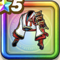

くさなぎの戦羽織
攻略班 8.5点 / ドルマ属性耐性+5%イオ属性耐性+5%メラ属性耐性+5%イオ属性耐性+5%【晴れ】ジバリア属性斬撃・体技ダメージ+3%【バトマス】スキルの斬撃ダメージ+2%ジバリア属性斬撃・体技ダメージ+6%
くわしい特徴
【レベル別習得スキル】 Lv1ドルマ属性耐性+5% Lv5守備力+5 Lv8イオ属性耐性+5% Lv10【晴れ】ジバリア属性斬撃・体技ダメージ+3% Lv12【バトマス】スキルの斬撃ダメージ+2% Lv15【バトマス】さいだいMP+5 Lv18ジバリア属性斬撃・体技ダメージ+6% Lv20メラ属性耐性+5% Lv23きようさ+5 Lv25イオ属性耐性+5% 【限界突破スキル】 1凸攻撃力+7 2凸すばやさ+10 3凸守備力+5 4凸さいだいHP+10